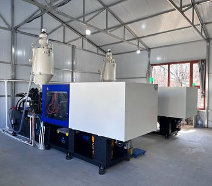
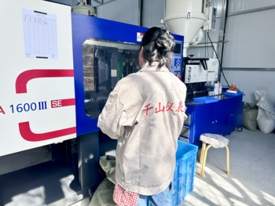
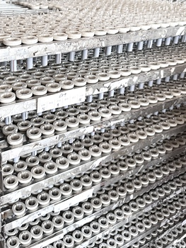
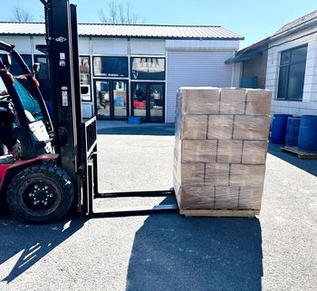
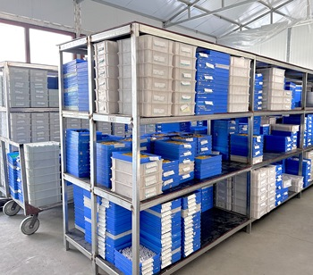

2025
新产业园奠基New Industrial Park Groundbreaking
鞍山新产业园项目正式奠基，达产后年产能大幅提升，进一步夯实制造基础。
Groundbreaking for the new Anshan industrial park, set to significantly expand annual production capacity.





QianShan Instrument 是一家专注于快速热电偶研发、生产和销售的高新技术制造商，总部位于辽宁鞍山，注册名称为鞍山市千山仪表有限公司。我们专注生产 S、B、R、W 四大系列消耗式快速热电偶，广泛应用于炼钢、炼铁、铸造及有色金属熔炼行业的钢水、铁水快速测温。秉承"质量第一"的原则，我们的产品通过了 ISO 9001 和 CE 认证，测温响应快、批次一致性好，满足冶金现场严苛的测温需求。千山仪表提供一站式快速测温解决方案，涵盖选型咨询、定制工程和售后支持等各个环节，产品远销30多个国家和地区，拥有3000多家长期客户。凭借经验丰富的团队和二十余年的专业技术，我们专注于提供具有竞争力和可靠性的快速测温产品以及从初步咨询到产品无缝交付的全方位交钥匙解决方案。
QianShan Instrument is a high-tech manufacturer dedicated to the R&D, production, and sales of fast-response thermocouples, headquartered in Anshan, Liaoning, and registered under the name Anshan QianShan Instrument Co., Ltd. We focus on producing the KS, KR, KB and KW series of consumable fast-response thermocouples, widely used for molten steel and iron measurement across steelmaking, ironmaking, foundry, and non-ferrous smelting. Guided by a "Quality First" principle, our products are certified to ISO 9001 and CE standards, delivering fast readings and consistent batch quality for demanding metallurgical sites. QianShan Instrument provides a one-stop fast-measurement solution covering selection consulting, custom engineering, and after-sales support, exporting to 30+ countries and regions and serving 3,000+ long-term clients. With an experienced team and over two decades of expertise, we focus on delivering competitive, reliable fast-measurement products and a full turnkey solution — from initial consultation to seamless product delivery.
作为新技术的先驱，我们的工厂实现了高度自动化生产，使得产品的质量与产能全面提升，并根据最新技术不断更迭。前沿创新使我们的客户能够通过先进技术实现经济效益最大化。我们的快速测温产品在炼钢、炼铁、连铸、铸造及有色金属熔炼等环节都表现出色。我们的产品拥有 CE、UL、ETL、FCC、EMC 和 TUV 等权威认证，确保符合各种市场需求。
As a pioneer in new technology, our factory has achieved highly automated production, comprehensively improving product quality and capacity while continuously upgrading in line with the latest technology. These cutting-edge innovations enable our clients to maximize economic value through advanced technology. Our fast-measurement products excel across steelmaking, ironmaking, continuous casting, foundry, and non-ferrous smelting. Our products hold prestigious certifications such as CE, UL, ETL, FCC, EMC, and TUV, ensuring compliance with diverse market requirements.
在QianShan Instrument，"质量第一"是我们的指导原则。我们采用最先进的设备和优质的组件，确保产品拥有无与伦比的可靠性。我们的使命是成为工业测温应用领域的全球领导者，推动行业进步，并为辽宁的经济增长做出贡献。我们热切期待与您携手合作，共创美好未来。
At QianShan Instrument, "Quality First" is our guiding principle. We use state-of-the-art equipment and premium components to guarantee unrivaled product reliability. Our mission is to become a global leader in industrial temperature sensing applications, driving industry advancement and contributing to the economic growth of Liaoning. We look forward to partnering with you in building a bright future together.
年行业经验
Years in Industry
项资质与专利
Certifications & Patents
出口国家/地区
Export Regions
合作客户
Clients Served
从建厂至今，千山仪表稳步成长的关键节点
Key milestones in QianShan Instrument's steady growth since founding
鞍山新产业园项目正式奠基，达产后年产能大幅提升，进一步夯实制造基础。
Groundbreaking for the new Anshan industrial park, set to significantly expand annual production capacity.
在华东地区设立区域服务中心，进一步缩短客户响应时间，提升售后效率。
A new regional service center in East China shortens response times and improves after-sales efficiency.
铂铑及钨铼偶丝加工产线投产，KS / KR / KB / KW 系列实现自主配丝与批量供货。
A Pt-Rh and W-Re wire line went into production, enabling in-house wire matching and volume supply of the KS / KR / KB / KW series.
快速热电偶产线完成扩建，生产效率与年产能实现翻倍增长。
The fast-response thermocouple line was expanded, doubling production efficiency and annual capacity.
建立标准化质量管理体系，为规模化生产打下坚实基础。
A standardized quality management system was established, laying the groundwork for scaled production.
鞍山市千山仪表有限公司正式注册成立，专注工业温度传感器研发生产。
Anshan QianShan Instrument Co., Ltd. was founded, focused on industrial temperature sensors.
通过多项国内外权威认证，保障产品合规与品质
Certified to multiple domestic and international standards for compliance and quality
质量管理体系认证
Quality Management System
欧盟合格认证
EU Conformity Certificate
防爆产品认证
Explosion-proof product certification
计量器具生产许可
Measuring instrument manufacturing license
第三方检测机构报告
Third-party lab test report
核心结构专利保护
Patent protection on core structures
第三方质量检验
Third-party quality inspection
安全生产管理资质
Work-safety management qualification
无论是标准产品还是非标定制，我们都能为您提供专业支持
Standard products or custom specs — our team is ready to support your project
联系我们Contact Us